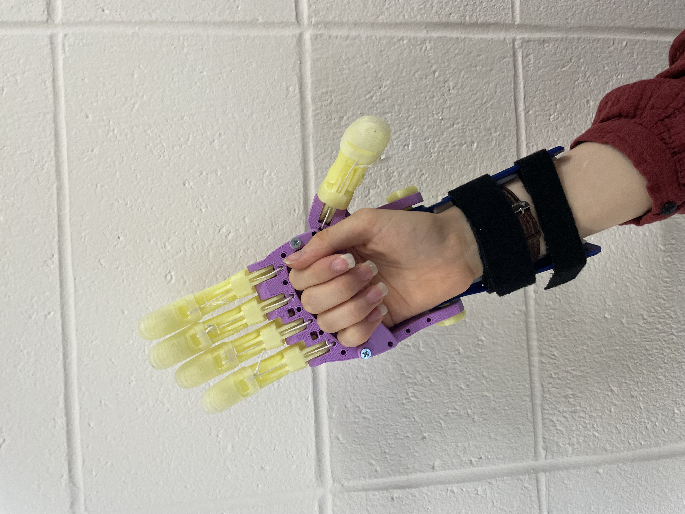
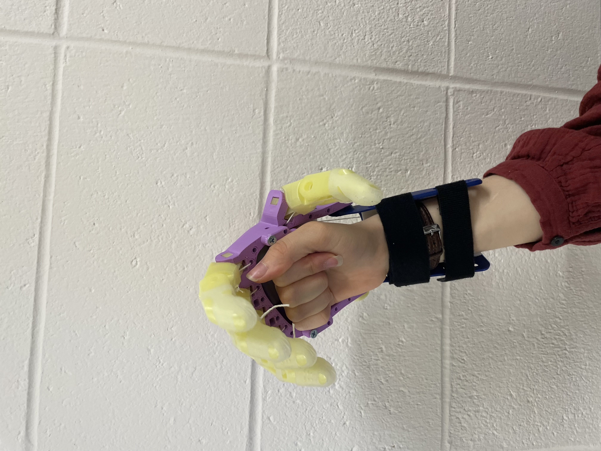
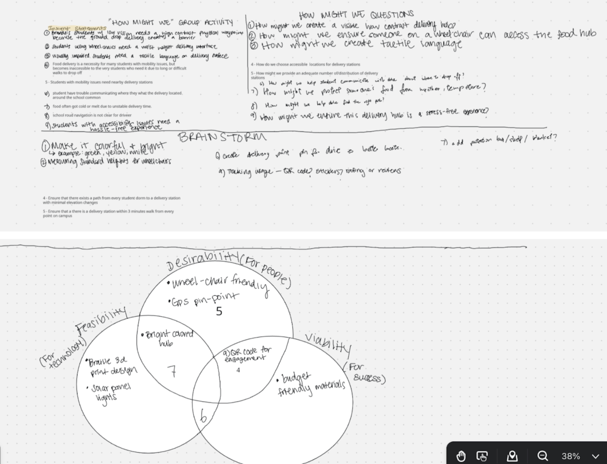

Capstone Project: The Accessible Delivery Hub
Problem Definition
Food delivery at Brandeis is a 'double-blind' problem: drivers can't find the right doors because of bad GPS pins, and students can't find their food because it's left at random locations on campus. This problem is only exacerbated for disabled students who may struggle to traverse the hilly campus due to movement disabilities or locate small parcels due to vision impairment. We are designing a Physical Delivery Hub that uses tactile markers and solar lighting to create a predictable, accessible drop-off point. Our goal is to bridge the gap between digital navigation and the built environment to make sure everyone can get their dinner independently.
Existing Science
We need to look at the physics of how humans (and machines) perceive and interact with the built environment. Since our project is about making a "Delivery Hub" findable and reachable, we should focus on Optics, Haptics, and Ergonomics.
Optics
We applied ADA Section 703 standards to our signage. By maintaining a 70% Light Reflectance Value contrast, we ensure the hub stands out against dark pavement even in heavy rain or low light conditions. This is most heavily inspired by existing highway signage
Haptics
To assist students with low vision, we integrated Tactile Ground Surface Indicators. These are the same bumpy truncated domes used on public sidewalks, allowing a user to find the delivery shelf by feel.
Ergonomics
Using research from the IDeA Center, we set our shelf height to 34 inches. This height allows wheelchair users to reach their food without the risk of overextending or falling out of their chairs.
Electronics
The hub is self-aware. By using a Light Dependent Resistor and the Photoelectric Effect, the hub automatically triggers its internal LED glow the moment the sun goes down to stay visible 24/7.
User Profile
Brandeis has approximately 7,200+ total students, with 12% to 15% identifying as having a disability. These figures suggest that, potentially, over 1,000 Brandeis students might face difficulties when interacting with the built environment, which can pose a major issue when it comes to food delivery. Because of the hilly terrain, these students rely on food delivery more than most, especially during the dark hours between 6 PM and 9 PM when navigating the campus becomes more dangerous
Ideation: Themes
Ideation was centered around three chief themes: Accessibility, Proximity, and Wayfinding. An accessible delivery station ensures that students with mobility issues can navigate to the station and those in wheelchairs can reach their food without strain. The idea of proximity involves the placement of delivery stations near preexisting student hubs, allowing students to get their food without excessive travel. The idea of wayfinding pertains largely to delivery drivers, allowing them to find the intended delivery station through the use of a physical beacon to fix GPS pins.


Ideation: "How Might We"
Through the ideation process, we then put together a number of how might we statements, pictured below, such as the following:
How might we make sure a wheelchair user can access the hub without help?
How might we distribute these stations so they are actually useful across campus?
How might we guide a driver to the exact right spot physically and digitally?

Final Selection
After generating various ideas like GPS beacons and floor paint, we chose the Illuminated Physical Delivery Hub. This solution provides the most immediate impact. It protects food from the weather, offers an ergonomic reach height, and uses solar lighting to signal its location to both drivers and students at all hours.

Measuring Success
Visibility: The hub must be clearly identifiable by a user with low vision from a distance of at least 50 feet during nighttime hours.
Accessibility: We will conduct a reachability audit to ensure a 100% success rate for students in wheelchairs retrieving items from the 34-inch shelf.
Temperature Control: We will test the internal insulation to verify that food stays above 140 degrees for a minimum of 30 minutes in the freezing Boston winter conditions.